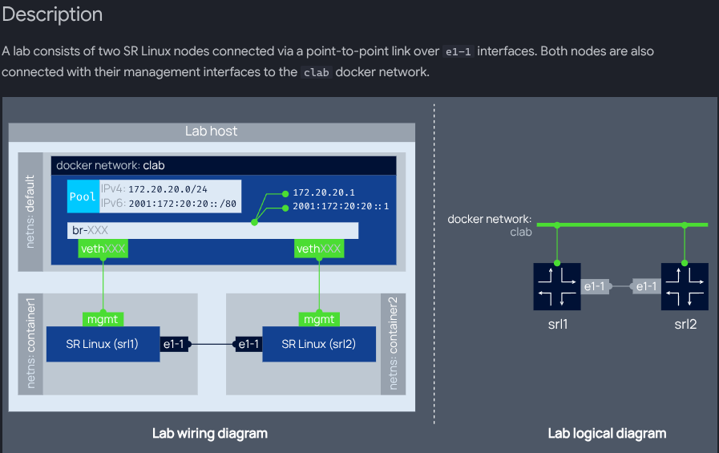
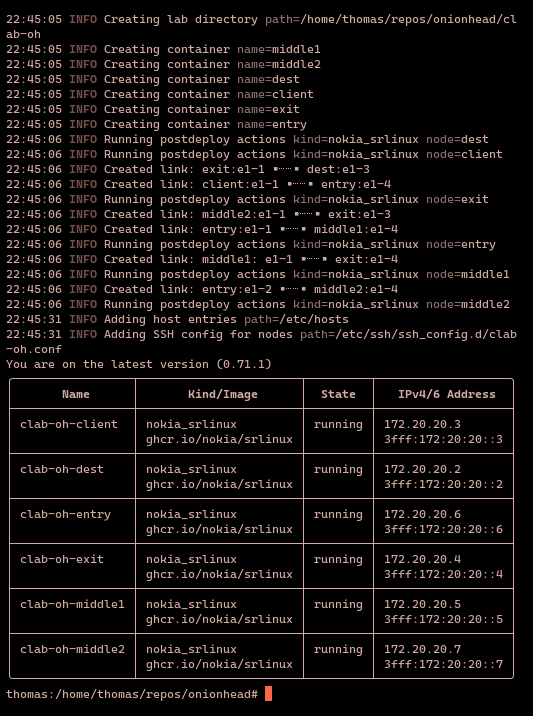
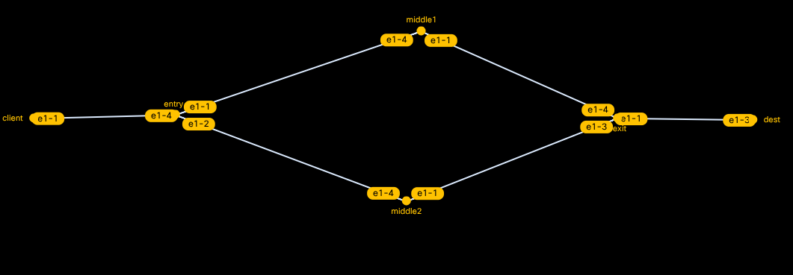

Onionhead: a DIY Onion Router
This post describes how I built an onion router to run on my local machine. The system is named "Onionhead" in tribute to Todd Rundgren, who wrote a song by that name.
Preliminaries
Why Care About Onion Routing?
Cryptography has historically focused on the protection of transmitted information, paying less attention to the shielding of information metadata. This metadata itself, however, can be a significant security and privacy concern. In countries where censorship is commonplace, simply accessing certain websites may mark you as a target for persecution. "I have nothing to hide", you might think, "Why should I care who knows what websites I visit?" That attitude, however, is only viable based on your position in a privileged present. Rights erode. What is protected today may be illegal tomorrow. And even in more mundane circumstances, it's often desirable to control what you disclose about yourself and how it gets disclosed. An onion router gives you a greater degree of control. It effectively covers your tracks as you travel across a network by protecting information metadata, like what website you visited at a certain time. It prevents passive observers from linking site access requests to the individuals making those requests. That makes it broadly useful, both for things like censorship resistance and also smuggling cocaine.
The social consequences of the technology are, thankfully, out of scope here; this post strictly focuses on 'how it works'. To better understand that, we're going to build an onion router.
Definition 1.1. An onion router is a system of internetworked proxies which apply a protocol of successive encryption in order to protect information metadata.
Tools and Setup
Containerlab is a containerized network simulator, built on Docker. We're going to use it to configure our network topology.
Note You need Docker to run containerlab. If you're reading this tutorial-style, this post assumes that you already have Docker installed. You can just run this Docker command to install containerlab: 'docker pull ghcr.io/srl-labs/clab'
Configuring a Network with Containerlab
A virtual lab is a simulation of a complex network that runs on a single machine. A lab is built by defining a network topology. Where a network is the whole set of interconnected components and connections, the complete system, a network topology is an abstraction and specification of a network. It's just a set of nodes and a set of edges.
Containerlab is a batteries-included, FOSS tool for building and running virtual labs. It gives you everything you need to define, run, and analyze labs out-of-the-box.
Here's an example of a network topology .yaml definition file:
# topology documentation: http://containerlab.dev/lab-examples/two-srls/
name: srl02
topology:
nodes:
srl1:
kind: nokia_srlinux
image: ghcr.io/nokia/nokia_srlinux
startup-config: srl1.cfg
srl2:
kind: nokia_srlinux
image: ghcr.io/nokia/srlinux
startup-config: srl2.cfg
links:
- endpoints: ['srl1:e1-1', 'srl2:e1-1']This diagram, from the same source, may be helpful in explaining what's going on:

From the above file and diagram, you can see that we literally just define a topology by naming it and then specifying the precise configuration of its nodes and links.
Onion routing systems require a minimum of three nodes to provide anonymity. To understand why, imagine you're trying to connect to some site via Tor. Your onion proxy builds a three hop circuit which hops from node1, to node2, then to the exit node, after which point you're connected with your destination application. At every step of the system, no two onion routers (or nodes) know the identity of both you and the site you want to connect to. The first node can identify your ip address, and it knows, after decrypting its layer of the onion, that your relay needs to go to node2, but it doesn't know your final destination. Node2, in turn, knows that a relay came from node1, and after decrypting its layer of the onion, that that relay needs to go to the third exit node, but it doesn't have any other information about the node's origins or its final destination. Similarly, the exit node knows the identity of the middle node and the destination, but nothing else. Now imagine there are only two nodes in between you and the site you're trying to access. If one of those nodes fails or is compromised, then a single node can now identify both you and your destination. Which means that anonymity is completely lost.
Because our system requires us to periodically switch between circuits, we need at least 4 routers (two middle, one entry and one exit).
So let's write our topology file. First, we'll create a dedicated directory by running mkdir onionhead. All this tutorial's work will be done from within this directory. Next, we'll start a file named oh.clab.yml. Then we'll add the name: oh at the top. Then we define an instance of a topology and indented beneath that, the nodes. Each node's kind is nokiasrlinux, because containerlab configures TLS by default on all connections between nodes of that kind. Containerlab will automatically create a config file for each node when the lab is created, so we can leave out the "startup-config:" option. Next up are the links. Each link is defined as a pair of endpoints, which are just strings specifying which port to connect to. For example, the string "client:e1-1" means port 1 on line-card 1 on the client node. (A line card is the hardware that contains all the ports for routers and switches to connect to; in this lab, there is only one linecard, so the first part of the interface specification will always be "e1", and you don't really need to worry about or know anything about linecards). Finally, our topology file will look like this:
name: oh
topology:
nodes:
client:
kind: nokia_srlinux
image: ghcr.io/nokia/srlinux
entry:
kind: nokia_srlinux
image: ghcr.io/nokia/srlinux
middle1:
kind: nokia_srlinux
image: ghcr.io/nokia/srlinux
middle2:
kind: nokia_srlinux
image: ghcr.io/nokia/srlinux
exit:
kind: nokia_srlinux
image: ghcr.io/nokia/srlinux
dest:
kind: nokia_srlinux
image: ghcr.io/nokia/srlinux
links:
- endpoints: ["client:e1-1", "entry:e1-4"]
- endpoints: ["entry:e1-1", "middle1:e1-4"]
- endpoints: ["middle1: e1-1", "exit:e1-4"]
- endpoints: ["exit:e1-1", "dest:e1-3"]
- endpoints: ["middle2:e1-1", "exit:e1-3"]
- endpoints: ["entry:e1-2", "middle2:e1-4"]We'll need to add some more configuration options to our nodes eventually, but for now this is enough. Next, just to make sure containerlab and our topology are set up properly, let's deploy our network. We'll run this command to start a containerlab shell:
docker run --rm -it --privileged \
--network host \
-v /var/run/docker.sock:/var/run/docker.sock \
-v /var/run/netns:/var/run/netns \
-v /etc/hosts:/etc/hosts \
-v /var/lib/docker/containers:/var/lib/docker/containers \
--pid="host" \
-v $(pwd):$(pwd) \
-w $(pwd)
ghcr.io/srl-labs/clab bashOnce up and running, the shell should look like this: username:/path/to/cwd#
Now we can run: containerlab deploy
You should see a number of INFO messages which inform you that containerlab is pulling images and creating containers (one container for each node defined in the network topology file) and links, like this:

As you can see, each node is running, and containerlab has assigned each node its own IPv4/6 address.
Now we can run the command containerlab destroy to tear down the lab, as it can consume quite a bit of system resources (mostly during start-up) and we won't be using it for a while.
We can also get a graphic representation of the topology graph at any time by running the command: graph -t oh.clab.yml and then pointing our browser to one of the listed addresses, where we'll see that containerlab is serving us the graph. If you've defined your topology file correctly, it should look like this (you may have to drag the nodes around a bit to get it looking exactly like this):

We'll exit the containerlab shell just by entering "exit". The next step is to build the actual components of the onion routing system.
Building the Client
The client is the user-side application that connects a user to the onion routing system. The client is responsible for circuit construction, sending/receiving relay cells and opening/closing streams.
Circuit Construction
In an onion routing system, all data is transmitted in fixed size cells. These cells follow a standard format which is defined in the system's specification. In this system, all cells will follow the TOR format. This means that all cells are 514 bytes long, consist of a header and a payload, and are one of two types: relay (data-carrying) or control (command-carrying, used to instruct some downstream node to take a specific action).
A circuit is a sequence of nodes which defines the path a client's cell travels to reach its destination. In order to construct a circuit, the client negotiates key exchanges with each node it intends to include in the circuit. It then takes its message and destination and encrypts that using the exit node's key. It concatenates a relay cell to the end of this ciphertext; the concatenated relay cell tells the middle node to send the cell to the exit node. The ciphertext and the concatenated relay cell are then encrypted using the middle node's key. This exact same process is repeated for the entry node (or in circuits more than three-hops long, for every node between the middle and entry nodes). (This layering of encryption is the reason it's called onion routing; because, like onions, the encrypted cells have many layers). This diagram shows what an onion looks like after all these encryption operations have been performed:

When a node receives a relay cell, it decrypts it using its private key. The decrypted payload will just be the concatenated relay cell which tells the node where to route the cell next; the actual message is still wrapped under several layers of encryption. The node then forwards the cell along, and similarly, at every step of the way, each node unwraps another layer of the onion, until finally, at the exit node, the entire message is decrypted.
We'll need to implement the following methods:
- A method of establishing private keys for all the nodes
- A method of establishing public key parameters (onion keys) for all the nodes
- A method of initiating public key handshakes between nodes
- A method of hashing keys to verify that the intended onion router actually completed the handshake
Key Generation and Management
Every relay node will have two public-private keypairs: (1), an identity keypair and (2), an onion keypair (in the TOR documentation, (2) is referred to as a "circuit extension" keypair). The identity keypair lasts the lifetime of the node, whereas the onion keypair has a shorter lifetime. The ephemerality of the onion key provides an important security benefit in that compromised keys are guaranteed to be useless after a fixed amount of time. The onion keys are used to encrypt and decrypt data during circuit construction, which is why it makes sense to rotate them out periodically.
The client will maintain a look-up table of key value pairs where each key is a node's node id and each value is that node's public key. When a node updates its keypair, it will need to notify the client so the client's look-up table can be updated with the node's new public key.
We'll use OpenSSL's implementation of RSA to handle the actual key generation.
We'll implement the following methods:
GenerateRelayIdentityKeypair(string nodeId, string dirAddress);
GenerateRelayOnionKeypair(string nodeId, string dirAddress);
GetRelayOnionKeyLifespan(string nodeId);
RefreshRelayOnionKey(strihg nodeId, string dirAddress);
SendNewPubKeyToClient(string dirAddress, string key, string type);For our client, we'll need a method to establish a shared secret key with each handshake. Each relay will need a method to return the handshake. The returned handshake will include the value \(g^y\), where g is the agreed-upon public key parameter and \(y\) is the relay's private key, as well as a hash \(H(K|\text{"handshake"})\), where \(K=g^{xy}\). This hash allows the client to verify that a key has been established with the correct router. To understand why this works, consider how the client will validate the relay's returned handshake. The client has the relay's public key, the value \(g^y\), and its private key \(x\). It can compute \(g^{xy}\) and then compute a hash of that value \(| \text{ handshake}\). Because hash algorithms are deterministic, if the node that it exchanged \(g^x\) with is also the node that returned \(g^{xy}\), then the hashed value \(H(K|\text{"handshake"})\) will equal the hash returned by the relay.
OfferHandshake(string nodeId, string myHalfOfKey);
ReturnHandshake(string nodeId, string myHalfOfKey, string hashedVal);
AuthenticateHandshake(string key, string hash);But First: A Little QOL
You can copy and paste the following shell script into your working directory. If you save it as setup.sh", when you run sudo bash -x setup.sh, it will (A) run containerlab, (B) deploy your lab topology, destroying any running instances due to the --reconfigure command, setting up containers and connections as specified in your topology file, and then (C) on your host machine, run an inspect command and redirect its output into a lab.json file. This last step writes the metadata that we'll need to use to establish TCP connections between our client and server nodes.
sudo docker run --rm -it --privileged --network host -v /var/run/docker.sock:/var/run/docker.sock -v /var/run/netns:/var/run/netns -v /etc/hosts:/etc/hosts -v /var/lib/docker/containers:/var/lib/docker/containers --pid="host" -v $(pwd):$(pwd) -w $(pwd) ghcr.io/srl-labs/clab bash -c 'containerlab deploy --reconfigure && containerlab inspect --all --format json > lab.json'
python create_node_directory.pyThat's Enough QOL
For simplicity's sake, we'll model this system as a peer-to-peer network, where each client